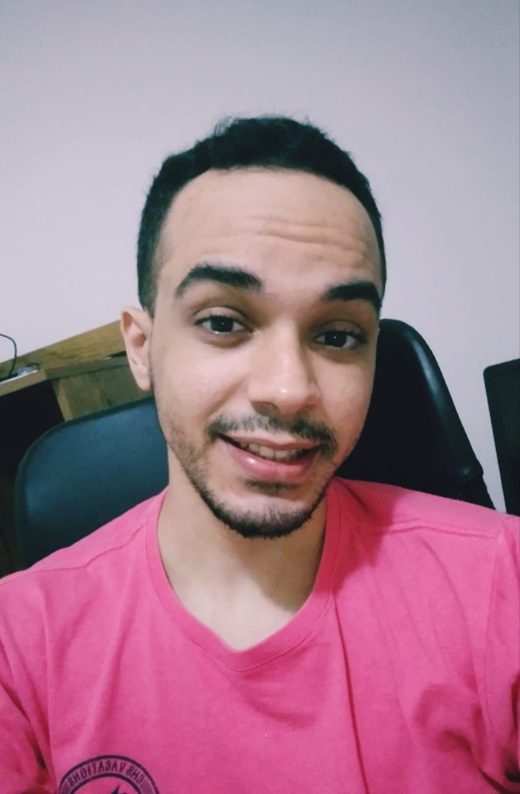

Currículo Vitae |
|
|  |
LUCAS DECHENIER DE OLIVEIRA BORGES 21 anos João Pessoa, Paraíba Email: lucas.dechenieroliveira@hotmail.com linkedin: https://www.linkedin.com/in/lucas-dechenier-14821a175 Telefone: (83) 99903-7571 |
ObjetivoTenho o objetivo de entrar no mercado de desenvolvimento e mostrar que posso ser capaz de aprender e aplicar aquilo que já tenho de conhecimento. Estou buscando uma primeira oportunidade de estágio ou primeiro emprego no qual meu principal objetivo é aprender e adquirir experiência na área para que eu possa me tornar futuramente um profissional requisitado. ResumoPossuo habilidades nas linguagens de programação C, C++, python, HTML e conhecimentos em orientação a objetos. Atualmente estou me focando em aprender desenvolvimento web, com interesses e aprendizados em Django, HTML5, CSS, MySQL e Git. Estou cursando o primeiro período do curso de Sistemas para Internet na UNIPE e atualmente tranquei meu curso de Engenharia Elétrica na UFCG no qual me encontrava no sexto período. Além disso, possuo conhecimentos em Machine Learning e Deep Learning (redes neurais), tendo realizado curso da Huawei. Me considero uma pessoa proativa e de rápido aprendizado, além de ter uma imensa vontade de aprender novas tecnologias almejando ser um grande desenvolvedor. ExperienciasProjeto de Pesquisa Universitário (UFCG)Fui durante 1 ano aluno bolsista de um projeto de pesquisa univer sitária que tinha como principais objetivos:
Projeto de Desenvolvimento Tecnológico (UFCG)Fui durante 1 ano aluno bolsista de um projeto de desenvolvimento tecnológico que tinha como principais objetivos:
FormaçãoSistemas para internet - Centro Universitário de João Pessoa (UNIPE)Fevereiro 2021 - AtualEngenharia Elétrica - Universidade Federal de Campina Grande (UFCG)Abril 2018 – Abril 2021 |
|